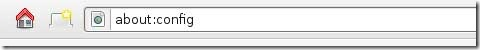
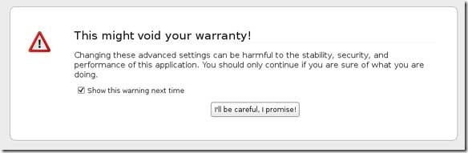
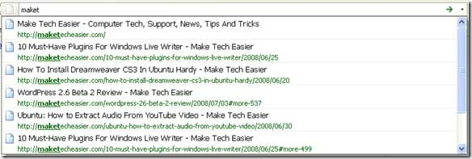
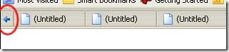
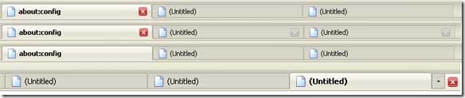

You may have installed countless add-on in Firefox to enhance your using experience, but if you want to get the most out of Firefox, you really have to hack your way into the about:config.
The about:config page contains most (if not, all) of Firefox configuration options. It is so far the most effective, and the most powerful way to tweak and enhance your Firefox performance. Here are 28 of the popular tweaks.
Accessing your about:config page
In your Firefox, type about:config in the address bar.

You will be shown a warning page. Click the “I’ll be careful, I promise!” button to proceed.

On the main page, you will see a long list of configuration entries. Enter the name of the key you want to update in the “Filter” field. The list will narrow to only the entries that match your keyword as you type.
To modify the value, simply double click on the entry value field and update the entry. That’s all!
Isn’t that simple? Now, let’s get to the tweaking.
1) Adjust the Smart Location Bar’s Number of Suggestions
In Firefox 3, when you start typing in the location bar, a drop-down list of suggestion URLs will be shown. If you want it to show more than 12 suggestions (12 is the default), you can adjust the browser.urlbar.maxRichResults keys and get it to show the number you want.

Config name: browser.urlbar.maxRichResults
Default: 12
Modified value: Set to your desired number of suggestion. If you want to disable it all together, set it to -1
2) Disable the session restore function
Firefox 3 automatically saves your session every 10 secs so that whenever it crashes, it can restore all your tabs. While this is a useful feature, some of you might find it irritating. To disable this function, toggle the value of browser.sessionstore.enabled to False
Config name: browser.sessionstore.enabled
Default: True
Modified value: False if you want to disable the session restore function
3) Adjust the Session Restore Saving Frequency
Same as above, if you decided to keep the session restore feature on, but want to reduce the session saving frequency, change the value of browser.sessionstore.interval so that Firefox will save the session at a longer interval.
Config name: browser.sessionstore.interval
Default: 10000 (in msecs, equivalent to 10secs)
Modified value: Set it to your desired value. 1000 means 1 sec and 60000 means 1 minute.
4) Enable Advanced Color Profile Support
Firefox has this advanced color profile features that display higher image quality. It is not enabled by default as it has a negative effect on the performance of the browser. If you are concern with the image quality rather than the performance, you can activated it via the gfx.color_management.enabled setting
Config name: gfx.color_management.enabled
Default: False
Modified value: True (if you want to activate the color profile support feature)
5) Disable Antivirus Scanning
This is mainly for Windows users. By default, Firefox 3 automatically scan the downloaded file with the default anti-virus application to make sure it is free of virus. If you download a big file, it could take a long time for the whole scanning process to complete. To increase the performance of the browser, you might want to consider disabling the anti-virus scanning via the browser.download.manager.scanWhenDone key.
Config name: browser.download.manager.scanWhenDone
Default: True
Modified value: False (if you want to disable it)
6) Configuring The Scrolling Tabs
When you opened many tabs, Firefox will not keep on reducing the tab width. Instead, it shows a scrolling bar so that the min width (100px) is conserved and you can scroll to find your tabs. If you are those who don’t like the scrolling tab function and prefer Firefox to show all the tabs, regardless how small it is, you can set the value of browser.tabs.tabMinWidth to 0 to disable it. Similarly, if you want Firefox to display more tabs before showing the scrolling button, you can reduce the default value to a lower value, say 75 pixels.

Config name: browser.tabs.tabMinWidth
Default: 100
Modified value: 0 if you want to disable the scrolling functions, other values to set the min width value
7) Show/Disable Close button on Tabs
Some people love to see the Close (the red X) button on every tabs, but some hate it. Whatever is it, you can configure it to your preferences via the browser.tabs.closeButtons setting.

Config name: browser.tabs.closeButtons
Default: 1
Modified values:
- 0 – display a close button on the active tab only
- 1- display close buttons on all tabs
- 2- don’t display any close buttons
- 3- display a single close button at the end of the tab strip
8) Extend Scripts Execution Time
In Firefox 3, a script is only given 10 seconds to respond, after which it will issue a unresponsive script warning. If you are hooked on a slow network connection, you might want to increase the script execution time via dom.max_script_run_time to cut down on the frequency of the no script warning.
Config name: dom.max_script_run_time
Default:10 (in secs)
Modified value: 20, or any values greater than 10
9) Handling JavaScript Popups
When you come across a site that executes a javascript open new window function, and if the popup window is without all the usual window features, i.e. back/forward/reload buttons, status bar etc, Firefox will automatically treat it as a popup and will not open it as a new tab. However, if you find this to be a nuisance and wanted to open all new windows in a new tabs, you can specify it via the browser.link.open_newwindow.restriction setting.
Config name: browser.link.open_newwindow.restriction
Default: 2 – Open all JavaScript windows the same way as you have Firefox handle new windows unless the JavaScript call specifies how to display the window
Modified values:
- 0 – open all links as how you have Firefox handle new windows
- 1 – do not open any new windows
- 2- open all links as how you have Firefox handle new windows unless the Javascript specify how to display the window
10) Enable Spell Checking In All Text Fields
The default spell checking function only checks for multi-line text boxes. You can get it to spell-check for single line text box as well.
Config name: layout.spellcheckDefault
Default: 1 (spell checker for multi-lines text boxes only)
Modified values:
- 0 – disable the spell checker
- 2 – enable the spell checker for all text boxes
11) Open Search Box Results In New Tab
When you search using the search box at the top right hand corner of the browser, it will display the search results in the current tab. If you don’t want the search to interfere with your current tab, you can tweak the browser.search.openintab to make it open in a new tab.
Config Name: browser.search.openintab
Default: False
Modified value: True (open search box results in new tab)
12) Lower The Physical Memory Used When Minimized
This tweak is mainly for Windows users. When you minimize Firefox, it will send Firefox to your virtual memory and free up your physical memory for other programs to use. Firefox will reduce its physical memory usage, when minimized, to approximately 10MB (give or take some) and when you maximize Firefox it will take back the memory that it needs.
The preference name does not exist and needs to be created.
Right click on the background and select New->Boolean.
Enter the name when prompted: config.trim_on_minimize
Enter the values: True
13) Speed up your Firefox
Several tweaks required for this
Config name: network.http.pipelining
Default: False
Modified value: True
Config name: network.http.proxy.pipelining
Default: False
Modified value: True
Config name: network.http.pipelining.maxrequests
Default: 4
Modified value: any value higher than 4, but not more than 8
Config name: network.http.max-connections
Default: 30
Modified value: 96
Config name: network.http.max-connections-per-server
Default: 15
Modified value: 32
14) Increase/Decrease the Amount of Disk Cache
When a page is loaded, Firefox will cache it into the hard disk so that it doesn’t need to be download again for redisplaying. The bigger the storage size you cater for Firefox, the more pages it can cache.
Before you increase the disk cache size, make sure that browser.cache.disk.enabled browser.cache.disk.enable is set to True.
Config name: browser.cache.disk.capacity
Default: 50000 (in KB)
Modified value:
- 0 – disable disk caching
- any value lower than 50000 reduces the disk cache
- any value higher than 50000 increases the disk cache.
15) Select all text when click on the URL bar
In Windows and Mac, Firefox highlights all text when you click on the URL bar. In Linux, it does not select all the text. Instead, it places the cursor at the insertion point. Regardless which platform you are using, you can now tweak it to either select all or place cursor at insertion point.

Config name: browser.urlbar.clickSelectsAll
Modified value:
- False – place cursor at insertion point
- True – select all text on click
16) Autofill Address in URL Bar
Other than the smart location feature, you can also get your URL bar to autofill the address as you type the URL.

Config name: browser.urlbar.autofill
Default: False
Modified value: True (Have Firefox autofill the address as you type in the URL bar)
17) Same Zoom Level For Every Site
Firefox remembers your zoom preference for each site and set it to your preferences whenever you load the page. If you want the zoom level to be consistent from site to site, you can toggle the value of browser.zoom.siteSpecific from True to False.
Config name: browser.zoom.siteSpecific
Default: True
Modified value: False (enable same zoom preferences for every sites)
18) Setting your zoom limit
If you find that the max/min zoom level is still not sufficient for your viewing, you can change the zoom limit to suit your viewing habits.
Config name: zoom.maxPercent
Default: 300 (percent)
Modified value: any value higher than 300
Config name: zoom.minPercent
Default: 30 (percent)
value: any value
19) Configure Your Backspace Button
In Firefox, you can set your backspace to better use by getting it to either go back to the previous page or act as page up function.
Config name: browser.backspace_action
Default: 2 (does nothing)
Modified value:
- 0 – go back previous page
- 1- page up
20) Increase Offline Cache
If you do not have access to Internet most of the time, you might want to increase the offline cache so that you can continue to work offline. By default, Firefox 3 caches 500MB of data from supported offline Web apps. You can change that value to whatever amount of your choice.
Config name: browser.cache.offline.capacity
Default: 512000 (in KB)
Modified value: any value higher than 512000 will increase the cache value
21) Auto Export Firefox 3 bookmarks to bookmarks.html
Unlike the previous version, Firefox 3 backup the bookmarks file in places.sqlite rather than the usual bookmarks.html. Since bookmarks.html allows us to export and sync our bookmarks with other browser, it will be very useful if Firefox 3 can backup the bookmark to the bookmarks.html as well.
Config name: browser.bookmarks.autoExportHTML
Default: False
Modified value: True (auto export bookmarks file to bookmarks.html)
22) Disable Extension Compatibility Checks
This is useful if you want to use an extension that is not supported by your version of Firefox badly. It is not recommended, but you can still do it at your own risk.
Right click and select New->Boolean. Enter extensions.checkCompatibility in the field. Enter False in the next field.
Right click again and select New->Boolean. Enter extensions.checkUpdateSecurity into the field and enter False into the next field.
23) Disable Delay Time When Installing Add-on
Everytime you wanted to install a Firefox add-on, you will have to wait for several secs before the actual installation starts. If you are tired of waiting, you can turn the function security.dialog_enable_delay off so that the installation will start immediately upon clicking.

Config name: security.dialog_enable_delay
Default: 2000 (in msec)
Modified value:
- 0 – start installation immediately
- any other value (in msec)
24) View Source in Your Favorite Editor
This is very useful for developers who are always using the ‘view source‘ function. This tweak allows you to view the source code in an external editor.
There are two configuration need to be made:
Config name: view_source.editor.external
Default: False
Modified value: True ( enable view source using external text editor)
Config name: view_source.editor.path
Default: blank
Modified value: insert the file path to your editor here.
25) Increasing ‘Save Link As‘ timeout value
When you right click and select the ‘Save Link As…‘, the browser will request the content disposition header from the URL so as to determine the filename. If the URL did not deliver the header within 1 sec, Firefox will issue a timeout value. This could happen very frequently in a slow network connection environment. To prevent this issue from happening frequently, you can increase the timeout value so as to reduce the possibility of a timeout.
Config name: Browser.download.saveLinkAsFilenameTimeout
Default: 1000 (1 sec)
Modified value: any value higher than 1000 (value is in msec)
26) Animate Fullscreen Toolbar Collapse mode
In Firefox’s fullscreen mode, toolbars and the tab strip are hidden at the top of the screen and only shown on mouseover. To draw attention to this, there is an animation of the toolbar sliding upwards and off-screen when fullscreen mode is toggled on. For performance issue, the animation of the collapse of the toolbar only appear for the first time. For some reason that you may love/hate the animation, you can adjust Browser.fullscreen.animateUp to switch it on/off for every collapse.
Config name: Browser.fullscreen.animateUp
Default: 1 (animate the toolbar collapse only the first time)
Modified value:
- 0 -disable the animation
- 2- enable the animation for every collapse
27) Autohide Toolbar in Fullscreen mode
In fullscreen mode, the toolbar is set to autohide and appear upon mouseover. If you have a need to view the toolbar at all time, you can toggle the value of browser.fullscreen.autohide to False to always show the toolbar.
Config name: browser.fullscreen.autohide
Default: True (always autohide)
Modified value: False (always show the toolbar)
28) Increase Add-On search result
If you go to Tools->Add-ons->Get Add-ons and perform a search there, Firefox will only fetch and display 5 matching results. If you want Firefox to show more than 5 results (say 10), you can adjust extensions.getAddons.maxResults to get it to display more results.
Config name: extensions.getAddons.maxResults
Default: 5
Modified value: any value more than 5
This list of about:config is definitely not the complete list. If you have any tricks not listed here, please add it in the comment.

Glad you liked it. Would you like to share?
Sharing this page …
Thanks! Close
Showing 49 of 71 comments
- M Subscribe by email
- S RSS
Load more commentsReactions
Trackbacks
08/22/2008 05:32 AM
[...] 28 Coolest Firefox About:Config Tricks [...]
08/22/2008 06:46 AM
[...] 28 Coolest Firefox About:Config Tricks [...]
08/22/2008 06:50 AM
[...] We all love and use Firefox. So, Make Tech Easier came up with a list of the 28 coolest ...
08/22/2008 09:29 AM
[...] a nice chap called Damien from Make Tech Easier has devised a list of the best FireFox About:Config Tricks ...
08/22/2008 09:46 AM
[...] Cool Firefox About:Config Tricks Written by Revital on August 22, 2008 – 12:46 pm - [28 Coolest ...
08/22/2008 01:30 PM
[...] 28 Coolest Firefox About:Config Tricks (via Delicious) Tags: Firefox, Software, Tutorials [...]
08/22/2008 07:29 PM
[...] DER Firefox3 Thread Ein paar nette about:config Tricks, allerdings auf englisch: 28 Coolest Firefox about:Config Tricks - ...
08/22/2008 07:41 PM
[...] de Firefox 3 en el Acer Aspire One (más sobre el aa1 en obm). Y ayer Make Tech Easier ...
08/23/2008 02:33 AM
[...] 28 Coolest Firefox About:Config Tricks - Make Tech Easier You may have installed countless add-on in Firefox to enhance ...
08/23/2008 08:45 PM
[...] 28 Coolest Firefox About:Config Tricks [...]
08/24/2008 04:31 AM
[...] 28 Coolest Firefox About:Config Tricks - Make Tech Easier (tags: tweaks tweak tricks tips tip software web firefox) [...]
08/24/2008 01:30 PM
[...] 28 Coolest Firefox About:Config Tricks - Make Tech Easier (tags: tweaks tweak tricks tips tip software web firefox) [...]
08/24/2008 09:34 PM
[...] 28 Coolest Firefox About:Config Tricks - Make Tech Easier (tags: firefox tweaks) [...]
08/25/2008 07:08 AM
[...] Windows users. By default, Firefox 3 automatically scan the downloaded file with the default anti-virus application to make sure ...
08/25/2008 08:40 AM
[...] ?? ??????????? ??? ?? ???? ??? ?? ??????? ???????? ?? ????? ??? ??? ?????? ???? ????? ?? ?? ?????? ...
08/25/2008 04:12 PM
[...] Read more at http://maketecheasier.com/ [...]
08/25/2008 09:17 PM
[...] value higher than 50000 increases the disk cache. This trick is from 28 Coolest FireFox ...
08/26/2008 06:50 AM
[...] Auf einen schönen Blog habe ich einen guten Post gefunden. Der Schreiber stellt ein paar gute Kniffe und Trick ...
08/26/2008 12:58 PM
[...] 28 Coolest Firefox About:Config Tricks [...]
08/26/2008 02:30 PM
[...] 7- 28 Coolest Firefox About:Config Tricks - Make Tech Easier [...]
08/26/2008 04:56 PM
[...] any value higher than 50000 increases the disk cache. This hint is from 28 Coolest ...
08/28/2008 07:51 PM
[...] 28 Coolest Firefox About:Config Tricks More cool ways to customise your Firefox. [...]
08/28/2008 09:25 PM
[...] MakeTechEasier lists the 28 Coolest Firefox About:Config Tricks. [...]
08/29/2008 12:16 AM
[...] ???? ??? ??????? ?? ???????? ???? ???? ???? ?? ???? 28 ???? ?? ??????? ?????????? ( ??????? [...]
08/29/2008 05:10 AM
[...] 28 Coolest Firefox About:Config Tricks - Make Tech Easier Så kan du tweaka din favorit-browser. (tags: tips trick ...
09/01/2008 04:13 AM
[...] 35- 28 Coolest Firefox About:Config Tricks - Make Tech Easier [...]
09/02/2008 04:12 PM
28 Coolest Firefox About:Config Tricks...
You may have installed countless add-on in Firefox to enhance your using experience, but if you ...
09/04/2008 08:10 PM
[...] Maketecheasier ist nämlich ein schöner Artikel, wie man den Firefox ein wenig “kuscheliger” [...]
09/22/2008 11:28 PM
[...] you rely on Firefox as heavily as I do, these 28 Cool Firefox About:Config Tricks will come in [...]
09/26/2008 08:30 AM
[...] Via | MakeTeckEasier [...]
10/04/2008 01:23 PM
[...] than 50000 increases the disk cache. 15) Select all text when click on the URL bar In Windows ...
10/28/2008 02:11 PM
[...] Los 28 trucos más interesantes sobre About:Config: 28 Coolest Firefox About:Config Tricks. [...]
10/28/2008 03:20 PM
[...] Firefox: los 28 trucos más interesantes sobre About:Config Antonio Cambronero: Los 28 trucos más interesantes sobre About:Config: 28 ...
10/30/2008 10:41 PM
[...] op 0. U kunt de add-on nu meteen installeren. Meer handige about:config tips leest u op het weblog Maketecheasier.com ...
11/02/2008 07:10 PM
[...] Link: Make Tech Easier [...]
11/03/2008 12:00 AM
[...] 28 Coolest Firefox About:Config Tricks - Make Tech Easier [...]
11/04/2008 07:09 PM
[...] TIPP: Speed up your firefox by applying this config tricks. [...]
11/10/2008 03:07 PM
[...] Shared a link on Google Reader. 28 Coolest Firefox About:Config Tricks - Make Tech Easier [...]
11/12/2008 04:08 PM
[...] Shared a link on Google Reader. 28 Coolest Firefox About:Config Tricks - Make Tech Easier [...]
11/18/2008 09:57 PM
[...] modificado: Cualquier valor sobre 5 Fuente: maketecheasier.com Traduccion: Juanshox __________________ No soy un ...
11/22/2008 02:56 PM
[...] are some more tweaks at maketecheasier.com possibly related posts (automated): firefox shortcutsfirefox deutsch + google suchemozilla [...]
12/02/2008 06:16 AM
[...] 28 Coolest Firefox About:Config Tricks [...]
12/02/2008 09:34 AM
[...] public links >> tricks 28 Coolest Firefox About:Config Tricks Saved by jeeves2001 on Tue 11-11-2008 ...
12/04/2008 06:28 AM
[...] http://maketecheasier.com/28-coolest-firefox-aboutconfig-tricks/2008/08/21 [...]
12/04/2008 07:31 AM
[...] has a neat FireFox post - 28 Coolest Firefox About:Config Tricks. Check it out! convert this ...
12/04/2008 04:22 PM
[...] Lakukan config untuk mengoptimalkan kinerja Firefox (Liat contekan-nya disini). [...]
12/07/2008 05:43 PM
[...] Ab Firefox in Version 3 gibt es ja den (meiner Meinung nach) gut gelungenen “intelligenten Verlauf”. Damit meine ich, ...
12/17/2008 02:18 PM
[...] ???28 Coolest Firefox About:Config Tricks ???Damien ???Luc [...]
12/17/2008 02:19 PM
[...] ???28 Coolest Firefox About:Config Tricks ???Damien ???Luc [...]
01/18/2009 05:32 PM
[...] put it to false (by cliking it simply) and restart browser -that's it ! Source : http://maketecheasier.com/28-coolest...cks/2008/08/21 [5) ...
02/20/2009 02:20 PM
[...] 28 Coolest Firefox About:Config Tricks [...]
03/12/2009 08:01 PM
[...] outras dicas em 28 Coolest Firefox About:Config Tricks [...]
03/23/2009 05:05 PM
[...] was searching for some great tweaks, and settings for Firefox and came across 28 Coolest Firefox About:Config Tricks - ...
05/02/2009 01:54 PM
[...] 28 Coolest About:Config Tricks [...]
05/12/2009 07:16 PM
[...] 15????Firefox????? 28????About:Config?? [...]
07/16/2009 06:37 PM
[...] hack your firefox Deja un comentario [...]
08/10/2009 10:41 AM
[...] 28 Coolest Firefox About:Config Tricks [...]
09/05/2009 12:36 PM
[...] 28 Coolest Firefox About:Config Tricks The about:config page contains most (if not, all) of Firefox configuration options. It ...
09/08/2009 02:01 AM
[...] 10. about:config. The true power user’s tool, about.config isn’t something to mess with if you don’t know what a ...
01/31/2010 07:25 AM
[...] 28 Coolest Firefox About:Config Tricks [...]
03/23/2010 01:03 PM
[...] about:config tips Filed under: Technology — 0ddn1x @ 2010-03-23 17:03:30 +0000 http://maketecheasier.com/28-coolest-firefox-aboutconfig-tricks/2008/08/21 Leave a Comment ...
03/26/2010 01:40 PM
[...] 28 Firefox About:Config Tweaks March 26, 2010 Posted by randytyler in General. trackback http://maketecheasier.com/28-coolest-firefox-aboutconfig-tricks/2008/08/21 [...]
04/21/2010 10:40 PM
[...] Original Post: http://maketecheasier.com/28-coolest-firefox-aboutconfig-tricks/2008/08/21 [...]
05/12/2010 04:16 AM
[...] Coolest Firefox About:Config Tricks Posted by: Damien on August 21st, 2008 27 Comments –> [...]
06/16/2010 02:06 PM
[...] Remove the close button from the tab (see tip 7 in 28 Coolest Firefox About:Config Tricks) [...]
07/01/2010 07:31 PM
[...] Source : disini [...]
08/03/2010 04:16 AM
[...] 28 Coolest Firefox About:Config Tricks – Make Tech Easier. [...]